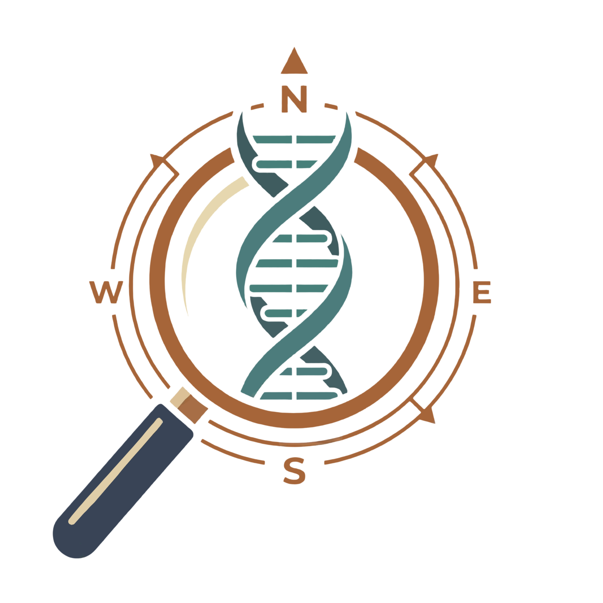

Option 1 — Teal bloom right, rose hint left

Option 2 — Caramel top-right, teal bottom-left
Option 3 — Stronger wash, more visible color
Option 4 — Diagonal drift, teal upper-right / caramel lower-left
Option 5 — Very subtle, almost invisible